Find one target file inside a large dataset using only its hash. I generated MD5 hashes across the entire dataset, searched for the provided hash, and verified the match by hand.
I remembered from a previous Linux Administration course that Ubuntu has md5sum for generating hashes, so that was my starting point. First I needed the provided dataset shared between my PC and Ubuntu running in Oracle VM VirtualBox. I shared the folder through the Oracle menu and named it plain_files to match the naming scheme of the project files, then confirmed it showed up in the /mnt/ directory.
The auto-mount option I checked did not work, so I manually mounted plain_files and confirmed both that the mount worked and that all the files were present. From there I ran md5sum across the whole dataset and saved the filenames and hashes to a text file. I confirmed the files were actually hashed before trusting the output, because I work from zero trust. Finally I opened the provided hash, used grep to find the matching hash in my generated list, and manually confirmed the match by pulling up the hashed result for the target file.
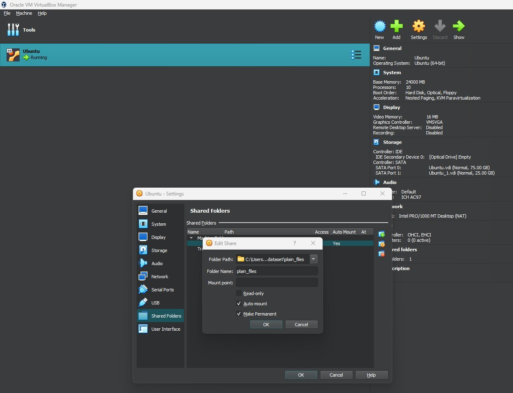
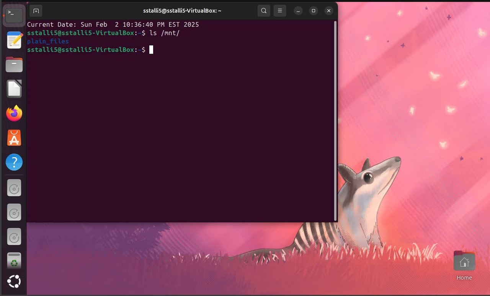
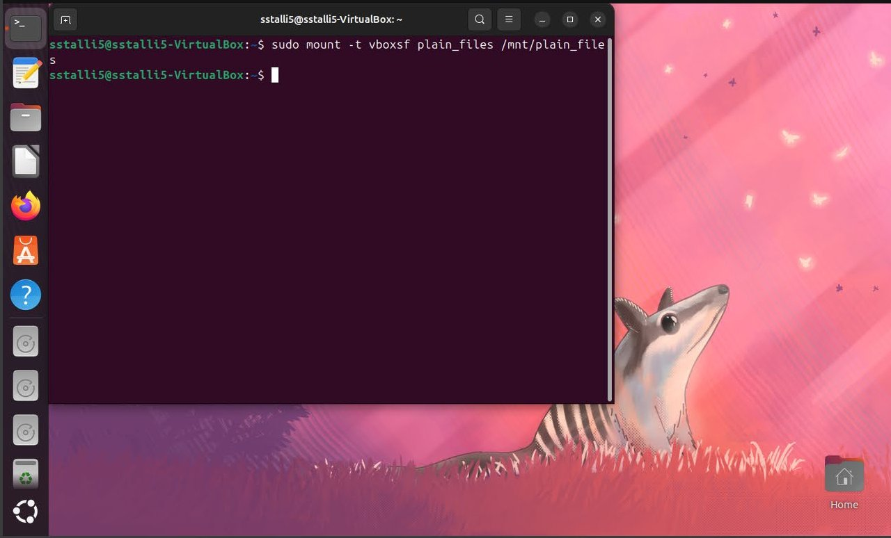
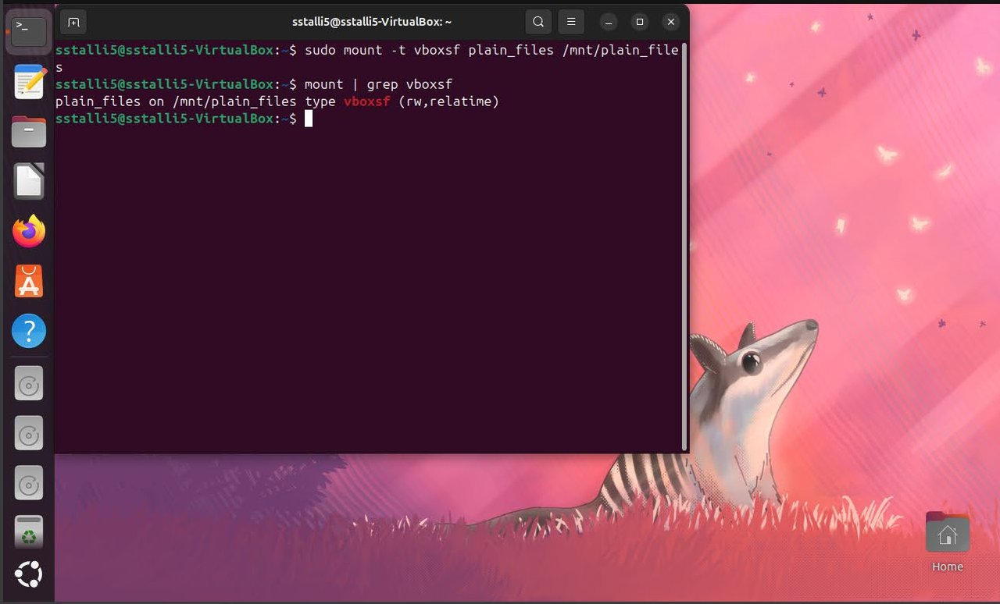
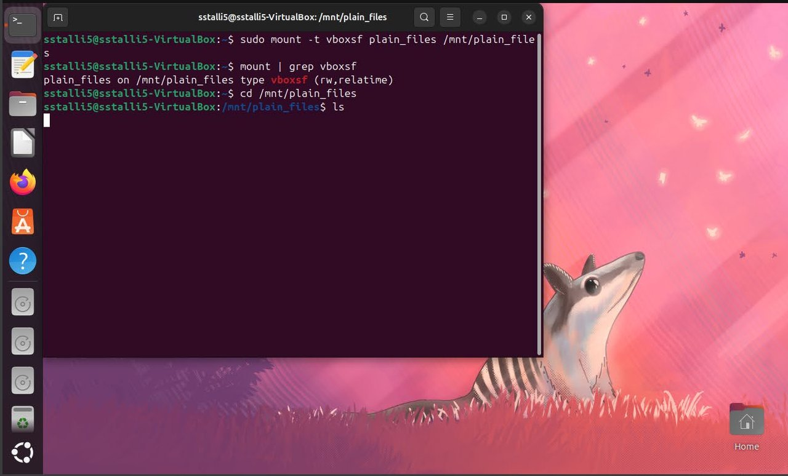
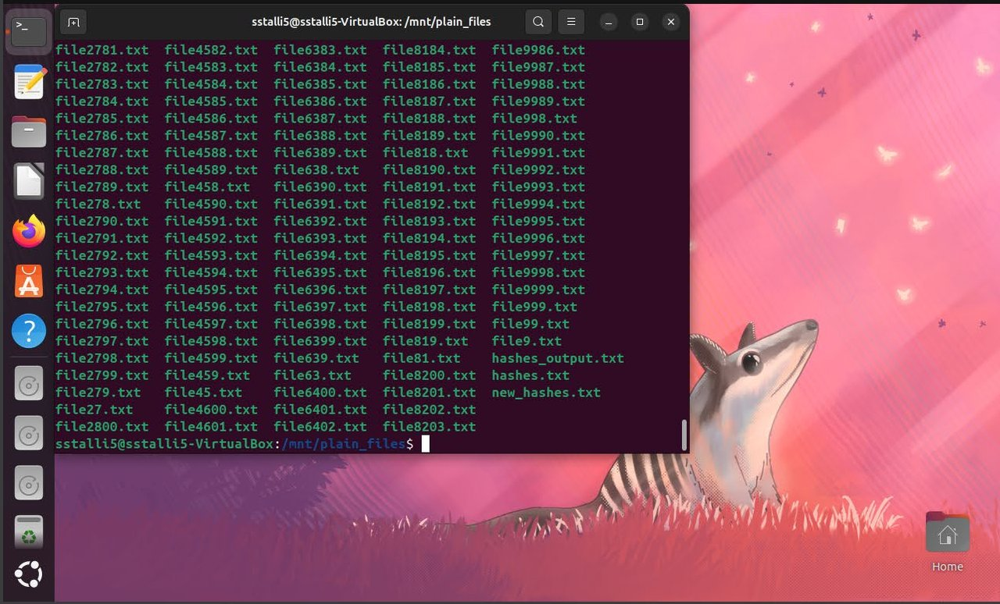
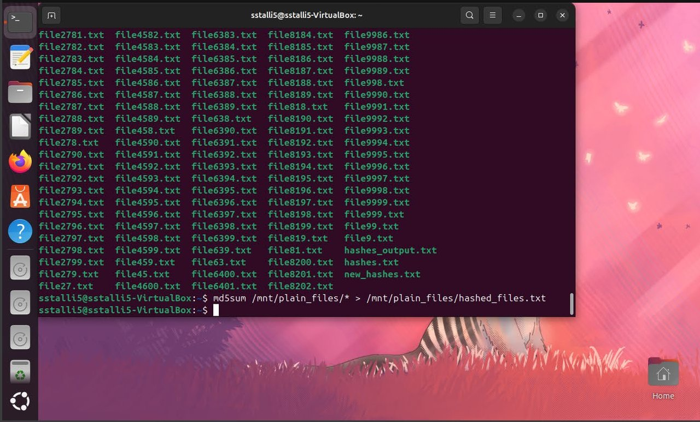
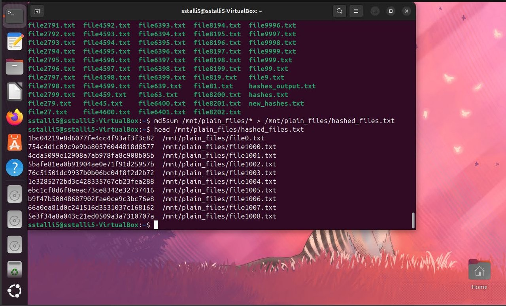
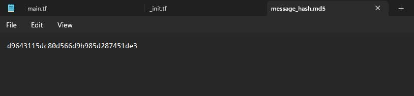
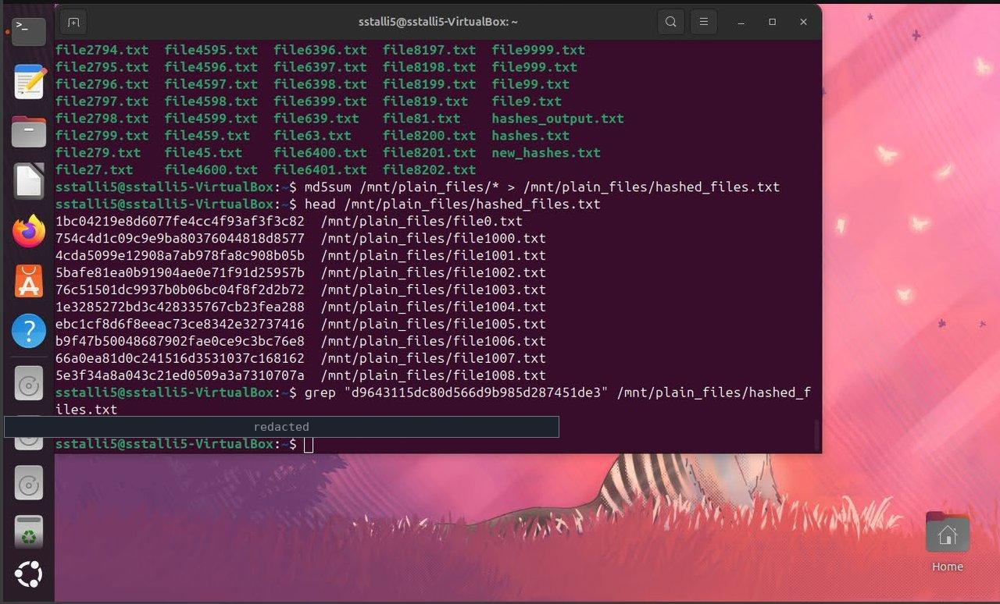
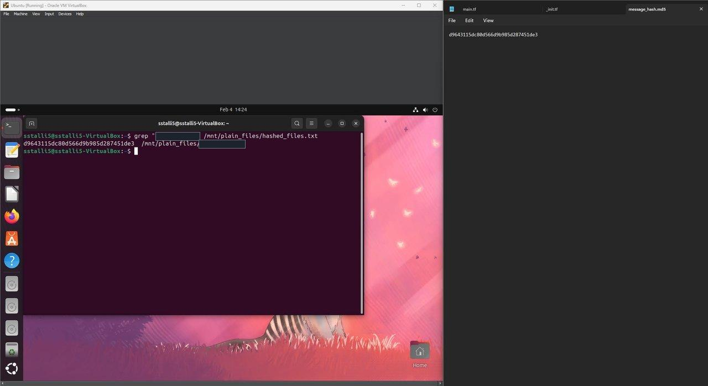